En Ajustes se dejan las reglas del supermercado: cuánto vale cada mueble, las temporadas, las metas, las sedes, cómo se llaman los muebles en la tienda y a quién le llegan los avisos. Se tocan poco, pero lo que se cambia acá vale para todos.
En el menú de la izquierda tocá Ajustes (el engranaje).
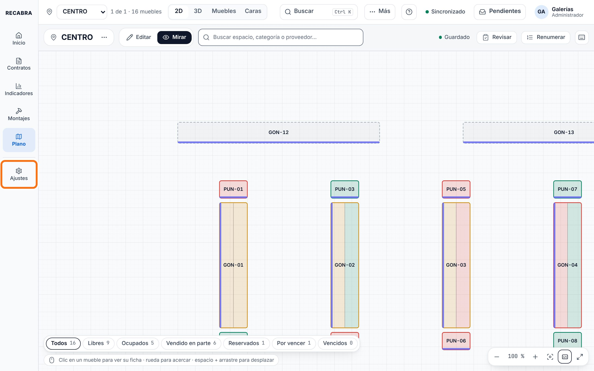
A la izquierda están los temas: Comercial, Sede y plano, Avisos, Equipo y Cuenta. Este capítulo explica los tres primeros; Equipo y Cuenta están en el manual del Dueño. La × de arriba (o Esc) cierra.
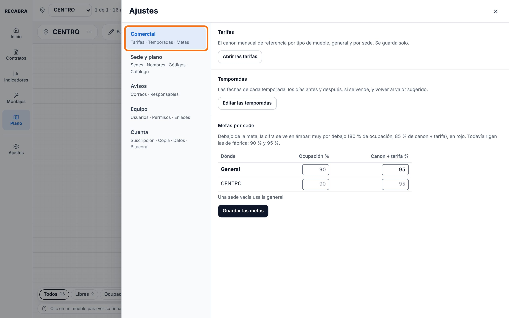
Cuándo: al empezar, y cuando cambian los precios de referencia (por ejemplo, cada año).
En Comercial, tocá Abrir las tarifas. Es el canon mensual de referencia de cada tipo de mueble, en pesos. La columna GENERAL vale para todas las sedes; la de la sede (elegila en Ajustar sede) la cambia sólo ahí. Escribí el número entero (600000, sin puntos). Se guarda solo; un campo vacío quita la tarifa.
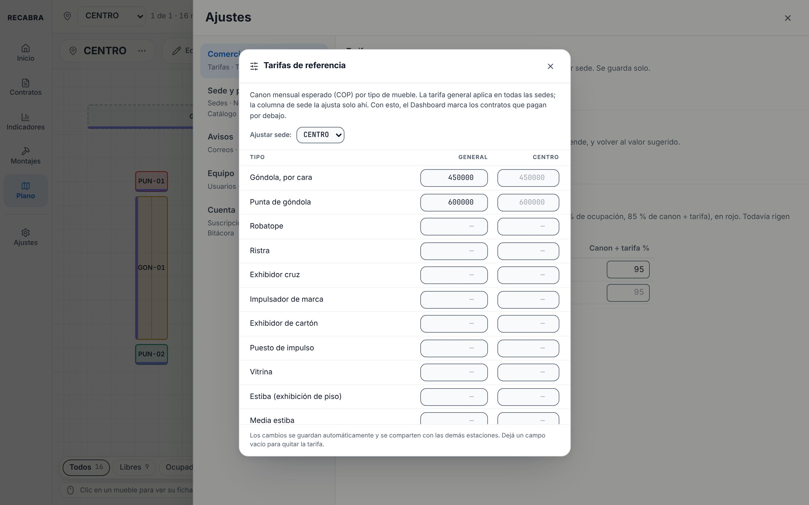
Con la tarifa, Contratos sugiere el precio y los Indicadores marcan los contratos que pagan por debajo. En la siembra: góndola $ 450.000 por cara, punta $ 600.000 y nevera de puertas $ 1.400.000 al mes.
Tocá Editar las temporadas. Cada temporada (Black Friday, Navidad, Escolar, Semana Santa…) tiene un ANCLA que calcula el sistema; vos decidís los DÍAS ANTES y DÍAS DESPUÉS, y la columna SE VENDE muestra las fechas que quedan. Se guarda solo y vale para todas las sedes.
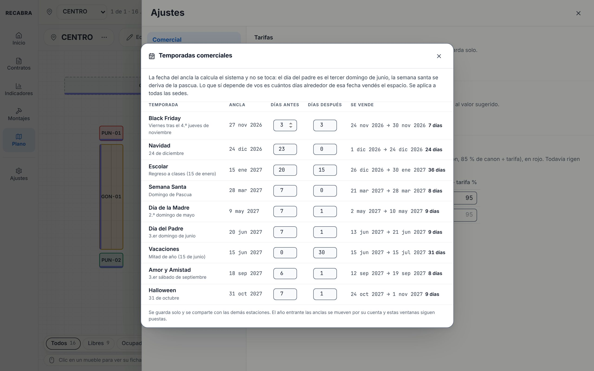
En Metas por sede, escribí la meta de Ocupación % y de Canon ÷ tarifa %, en General o por sede (vacío usa la general). Debajo de la meta, la cifra de Indicadores se ve en ámbar; muy por debajo, en rojo. Tocá Guardar las metas.
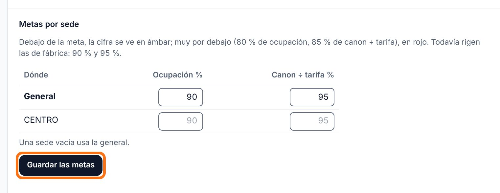
Cuándo: abre una tienda nueva, cambia de nombre o cierra.
Tocá Sede y plano. Arriba están las sedes con cuántos muebles tienen. El lápiz renombra; el tacho elimina (la última sede no se puede eliminar).
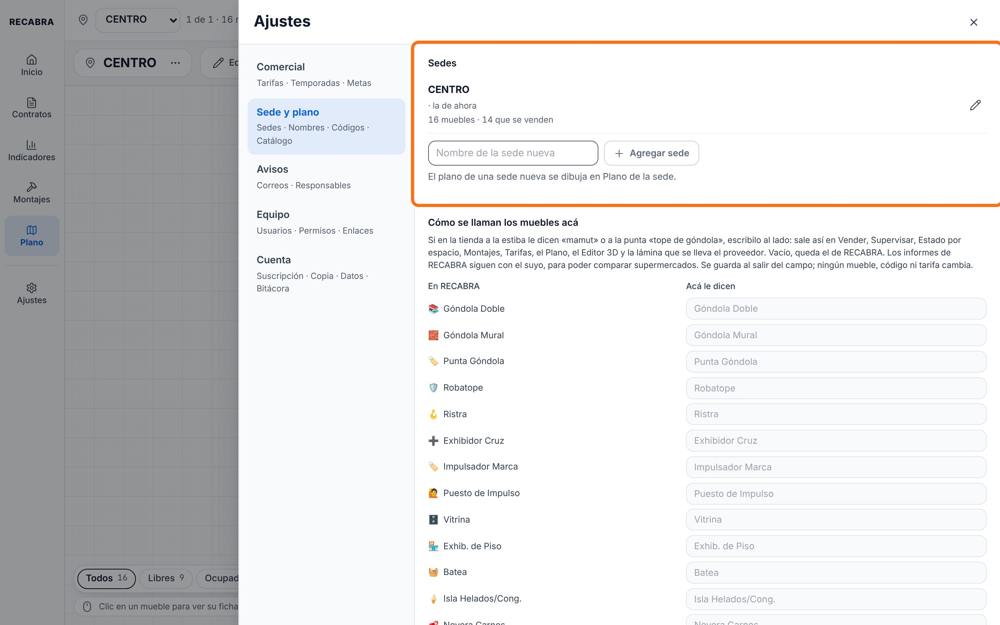
Para una sede nueva, escribí su nombre en Nombre de la sede nueva y tocá Agregar sede. Después dibujá su plano en Plano de la sede (capítulo 7), eligiéndola arriba.
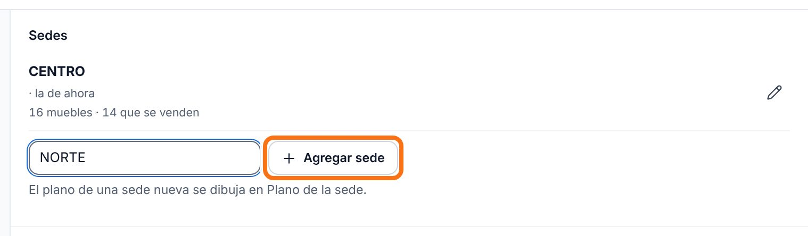
El tacho abre Eliminar la sede «NORTE»: dice cuántos muebles y contratos se van y pide escribir el nombre para confirmar. Se borra el plano en todos los computadores, los contratos se cierran y el tablero pierde sus cifras. Queda 30 días en la Papelera, con Restaurar; después, ya no vuelve. Las reservas provisionales canceladas no vuelven nunca.
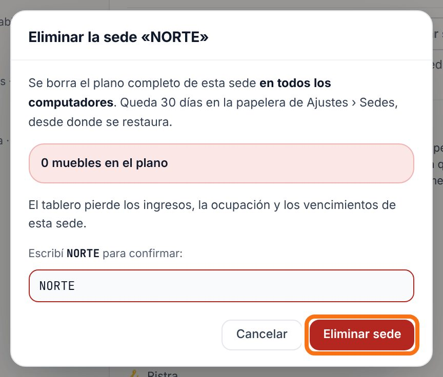
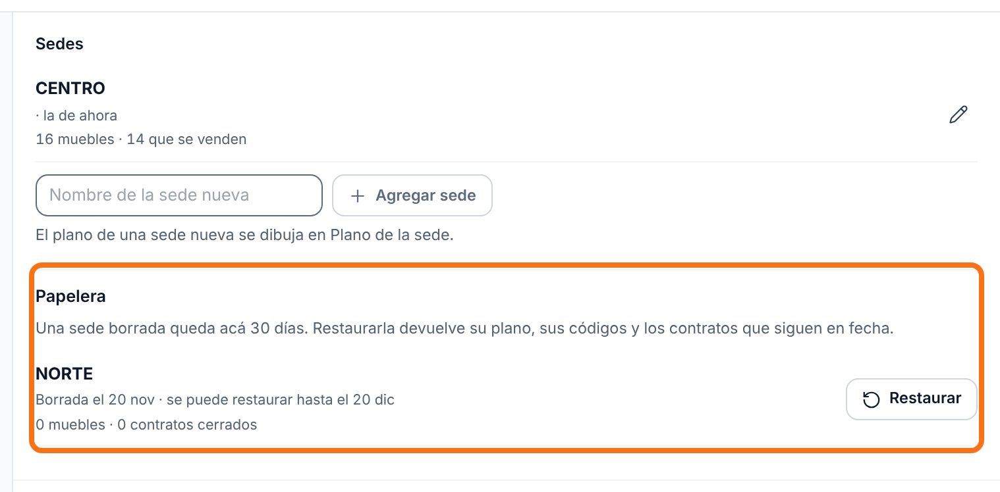
En Cómo se llaman los muebles acá, escribí al lado de cada tipo cómo le dicen en la tienda (por ejemplo, a la Exhib. de Piso le dicen «Mamut»). Sale así en todas las pantallas y en la lámina del proveedor. Se guarda al salir del campo; ningún mueble, código ni tarifa cambia. Vacío, queda el nombre de RECABRA.
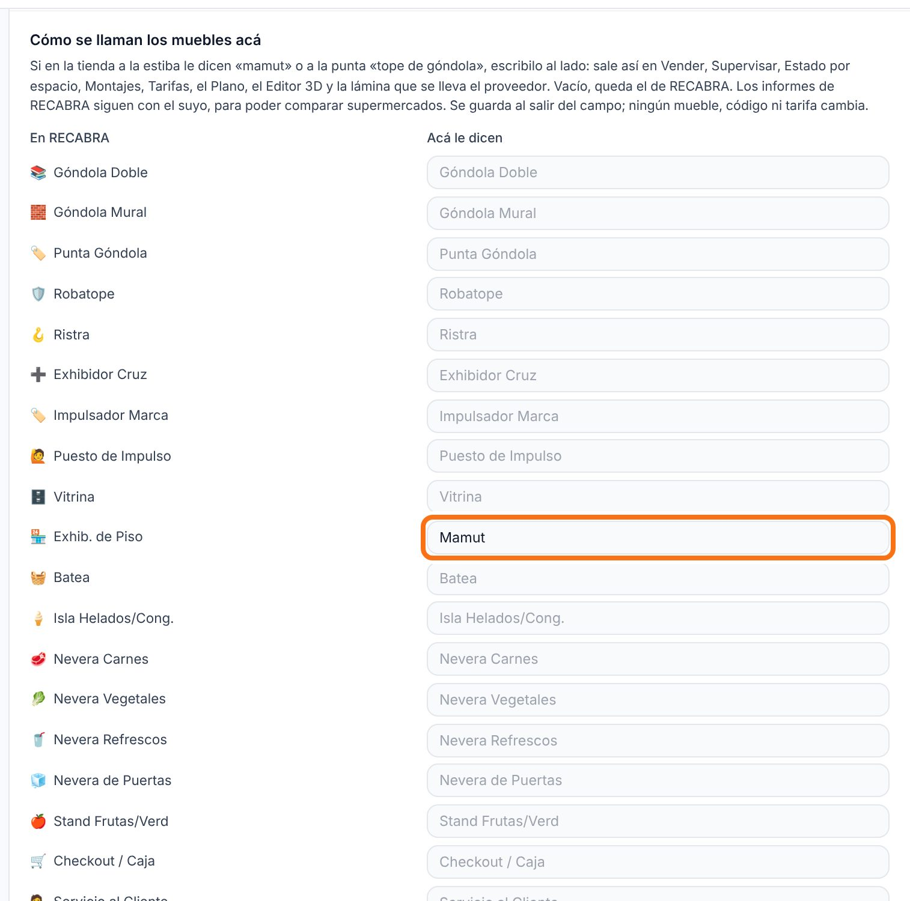
Más abajo, Ordenar los códigos abre la renumeración (7.10) y Abrir Mis muebles el catálogo de muebles propios (7.12).
Cuándo: al empezar, y cada vez que cambia quien administra una sede o quien monta.
Tocá Avisos. Arriba, Notificaciones por correo: los correos que reciben los avisos de vencimiento y los Días de recordatorio antes del vencimiento (por ejemplo 30,15,6). Tocá Guardar notificaciones. Abajo (2), Quién recibe los avisos: el Gerente operacional (todas las sedes) y, por sede, el Administrador de sede (con valores) y el Mercaderista · sin valores (la orden de montaje). Tocá Guardar contactos.
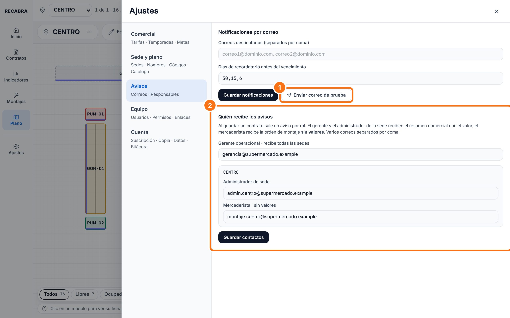
Para probar que los correos salen, tocá Enviar correo de prueba (1). Si sale bien, lo dice en verde. Si no, dice en rojo por qué; en la copia de prueba del manual el correo está cortado a propósito y se ve así:
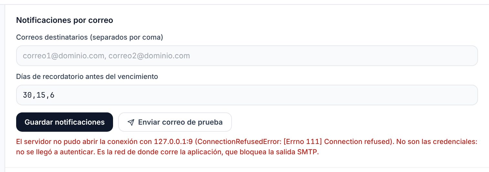
Si dice No son las credenciales, el problema es la red o el proveedor de correo, no tu clave: avisale a quien maneja la cuenta de RECABRA (el Dueño) o a soporte. Mientras tanto, los avisos quedan en cola y se reintentan.
El Mercaderista recibe la orden sin valores. Nunca pongas el correo de un proveedor como gerente o administrador de sede: le llegarían los precios de todos.